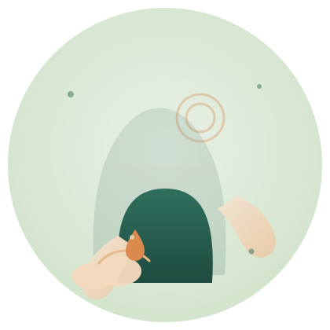

CARE REHABILI THERAPIST
高齢者にやさしい施術を、
資格という形に。
日本介護リハビリセラピスト協会が認定する「介護リハビリセラピスト」は、アロマとマッサージを組み合わせ、高齢者のからだに負担をかけずに寄り添う施術を学べる資格です。
通信講座・1日講座の2つの取得スタイルから、ご自身の生活に合わせて選べます。
※本ページは広告（アフィリエイトリンク）を含みます。当サイト（NAO WEB LAB）が独自に作成した紹介ページであり、日本介護リハビリセラピスト協会ではありません。

EMPATHY
こんな悩み、ありませんか？
- 利用者さんの手足のむくみや関節のこわばりに、何かしてあげたいけれど専門的な知識がない
- 家族の介護をする中で、力任せのマッサージでかえって負担をかけていないか不安
- 資格を取りたいけれど、年会費や更新料がずっと続くタイプは避けたい
- 仕事や家事で忙しく、決まった日に何度も学校に通う時間は取りにくい
そんな方のために案内されているのが、通信講座・1日講座から選べる「介護リハビリセラピスト」資格です。
ABOUT
介護リハビリセラピストとは
介護リハビリセラピストは、日本介護リハビリセラピスト協会が認定する資格です。アロマテラピーとマッサージを組み合わせた施術方法で、「状態のケア」と「心地よさ」を大切にし、力任せに揉みほぐすのではなく、座った姿勢のまま行えるやさしい施術を学びます。ビタミンEを含むアロマビタミンオイルを数滴使う設計で、筋肉量が少ない方のからだにも負担をかけにくいとされています。
FOR YOU
こんな方に選ばれています
協会が公表している通信講座受講者のデータによると、受講者の内訳は介護職員・経営者41%、看護師・医療関係者26%、セラピスト・アロマセラピスト22%、OL・会社員9%、その他2%。年代別では40代27%、30代25%、50代24%、20代21%、60代3%となっています。
- 介護施設で利用者さんに直接施術をしてあげたい方
- 訪問看護や在宅介護で、家族や利用者の手足のケアに関わる方
- セラピスト・サロン経営者としてメニューの幅を広げたい方
- 高齢のご家族に、自宅で安全にマッサージをしてあげたい方
※上記の「こんな方に選ばれています」は、協会公表データや講座内容から推定した対象像（推定）です。実際の受講目的は人それぞれです。
HOW TO GET CERTIFIED
2つの資格取得スタイルから選べます
自宅でじっくり
通信講座
29,800円（税込）
ネット申込割引価格（通常価格40,000円）／認定試験料込み・送料無料
分割払い例：月々1,444円×24回
- テキスト1冊・施術DVD2枚・アロマビタミンオイル1本
- オンライン学習＋練習動画チェックサービス
- 認定試験は自宅からスマホ・PCで受験可能
- 合格するまで何度でも無料で再受験できる
- 資格取得までの目安：1か月以内14％・3か月以内61％（協会公表データ）
最短即日で取得
1日講座
49,800円（税込）
テキスト・DVD・アロマビタミンオイル・認定証代込み
試験免除で、その日のうちに認定証を授与
- 所要時間は4時間程度（会場により午後開催が多い）
- 全国各地で開催（東京・大阪・愛知・福岡・宮城・埼玉・沖縄・神奈川・岡山・広島・静岡など）
- 会場ごとに6〜22名程度の少人数制
- 実技中心で、未経験でも学びやすい内容
- キャンセル規定あり（詳細は公式サイトでご確認ください）
※価格・割引条件・開催スケジュールは変更される場合があります。お申し込み前に必ず公式サイトで最新情報をご確認ください。
CURRICULUM
身につく知識と技術
理論から学ぶ基礎知識
介護リハビリセラピーの作用、アロマテラピー精油学、解剖学、アレルギー反応や禁忌症などを座学で学びます。
部位別の実技
足のむくみ・足底痛・膝関節痛、手のむくみ・こわばり、肩関節痛や首肩背中のこりなど、部位ごとの施術方法をDVDと動画で習得します。
認知症予防へのアプローチ
高齢者の認知面に配慮した施術方法も、カリキュラムの中で紹介されています。
資格取得後も相談できる
合格するまで何度でも受験でき、実技に不安があれば練習動画をチェックしてもらえるなど、学習中も相談できる体制があります。
SUPPORT
初めてでも安心して学べる理由
通信講座では、実技に不安がある場合に練習した動画をチェックしてもらい、アドバイスを受けられるサポートがあります。認定試験は自宅から何度でも無料で挑戦でき、協会公表データによると90％以上の方が通信講座のみで資格を取得しています。学習の途中で1日講座に切り替えることも可能とされています。
HOW TO APPLY
お申し込みの流れ
- 1
公式サイトから申し込む
通信講座・1日講座、希望のスタイルを選んで公式サイトから申し込みます。
- 2
教材が届く／会場で受講する
通信講座はテキスト・DVD・アロマビタミンオイルが自宅に届きます。1日講座は会場で実技を学びます。
- 3
学習・実技練習を進める
自分のペースでテキストとDVDを使って学習し、不安な実技は練習動画チェックサービスを利用します。
- 4
認定試験を受ける（通信講座の場合）
自宅からオンラインで受験します。合格するまで無料で再挑戦できるとされています。
- 5
認定証を受け取る
合格後（1日講座は当日）、介護リハビリセラピストとして認定されます。
IMPORTANT
お申し込み前に知っておきたいポイント
- 施術の効果や学習の進み方には個人差があり、当ページはすべての方に同じ結果を保証するものではありません。
- 介護リハビリセラピストは、日本介護リハビリセラピスト協会が独自に認定する資格です。資格の位置づけや取得後に行える業務の範囲については、公式サイトで必ずご確認ください。
- 価格・割引条件・開催スケジュールは変更される場合があります。お申し込み前に必ず公式サイトの最新情報をご確認ください。
- 持病やアレルギーがある方への施術、精油の使用にあたっては、公式サイトの注意事項を確認のうえご検討ください。
- 1日講座のキャンセル条件など、規約の詳細は公式サイトでご確認ください。
FAQ
よくある質問
公式サイトの案内では、自分のペースでじっくり学びたい方には通信講座、短期間でまとめて実技を身につけたい方には1日講座が紹介されています。学習の途中で通信講座から1日講座に変更できるとの記載もありますので、迷う場合は公式サイトで詳細を比較のうえご検討ください。
公式サイトによると、認定試験は自宅からスマートフォンやパソコンで受験でき、合格するまで無料で再挑戦できるとされています。最新の試験方法・合否連絡の流れは公式サイトでご確認ください。
公式サイトの案内では、認定試験料・認定証発行料・年会費・更新料はいずれもかからないとされています。費用の詳細は申し込み前に公式サイトでご確認ください。
公式サイトによると男性受講者は3割以上とされており、男性の受講も想定されています。詳しくは公式サイトでご確認ください。
割引価格やキャンペーン内容は変更される場合があります。お申し込み前に、必ず公式サイトで最新の料金・条件をご確認ください。
ご利用にあたっての注意事項
- 本ページは、アフィリエイトプログラムを利用してNAO WEB LABが独自に作成した紹介ページです。日本介護リハビリセラピスト協会が制作・監修したものではありません。
- 掲載内容は2026年9月時点で公式サイトから確認できた公開情報をもとに作成しています。価格・カリキュラム・開催スケジュール・利用規約は変更される場合がありますので、お申し込み前に必ず公式サイトで最新情報をご確認ください。
- 効果や学習の進み方には個人差があり、当ページは特定の効果・結果を保証するものではありません。
高齢者にやさしい施術を、
あなたの手に。
通信講座・1日講座、どちらのスタイルでも資格取得後の年会費・更新料はかかりません。まずは公式サイトで、カリキュラムや最新の費用をご確認ください。
公式サイトで詳しく見る